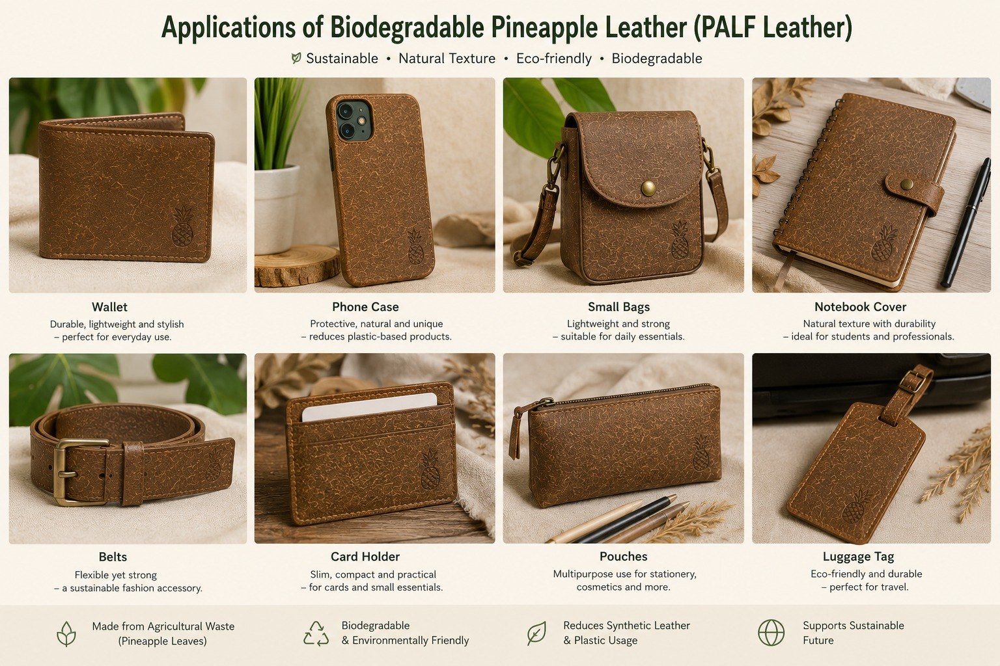

Characteristics and Potential of PALF-based Materials
Pineapple Leaf Fiber (PALF) possesses several desirable properties that make it a promising natural fiber for the development of sustainable leather-alternative materials. PALF contains a high percentage of cellulose, which contributes to its good tensile strength, stiffness, durability and structural integrity. It is also lightweight, renewable and obtained from pineapple leaves that are commonly considered agricultural waste, making it a valuable material for waste utilization and sustainable product development.
In addition, the natural fibrous structure of PALF provides a unique surface texture that can produce a leather-like appearance when the material is properly processed, compressed and surface-treated. Chemical treatment, particularly alkaline treatment using sodium hydroxide (NaOH), can remove a portion of lignin, hemicellulose and surface impurities from the fibers, improving surface roughness and enhancing bonding between the fiber and polymer matrix.
The properties of the final material can also be adjusted by controlling factors such as fiber content, binder composition, processing conditions and sheet thickness. A thinner sheet can provide greater flexibility and ease of folding, while a thicker sheet can provide greater rigidity and dimensional stability. Due to these properties, PALF-based materials have potential applications in non-structural products such as wallets, phone cases, notebook covers, small bags, belts, footwear components, packaging materials and decorative interior panels. Therefore, the development of PALF-based leather alternatives can provide functional applications while simultaneously reducing agricultural waste and dependence on conventional petroleum-based synthetic leather.
